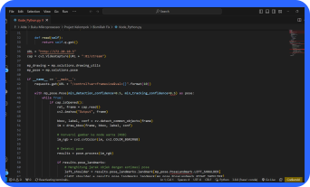
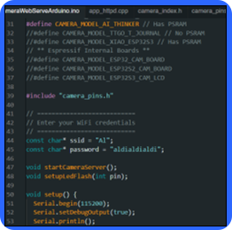
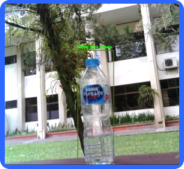
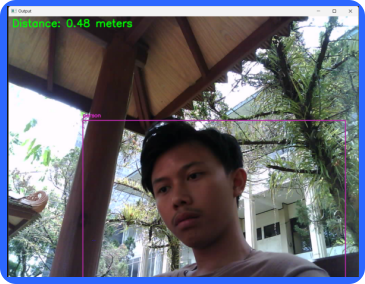

Sistem kamera yang sering kita jumpai umumnya hanya
menampilkan gambaran kondisi sekitar secara visual saja tanpa dapat mengetahui
pasti objek apa yang ada di sekitar kita. Oleh karena itu, AI dapat diterapkan untuk
menganalisis gambar yang diambil kamera dan mengenali objek, seperti daun, hewan, dinding,
pembatas jalan, dan kendaraan lainnya. Dengan begitu, sistem ini dapat memberikan peringatan
pada pengemudi jika terdapat objek atau kendala yang mengganggu . Dengan adanya sistem ini akan
sangat berguna untuk parkir mundur atau parkir paralel bahkan saat berada di perjalanan karena
menampilkan data visual dan informasi secara akurat
Kode Sumber


Hasil

